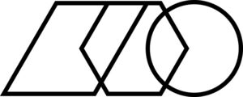

Trade Mark Journal No.2025/034 22 August 2025
WO0000001867474 (6,9,11,16,19,20,35,36,41,42)
Office of origin: Switzerland
Date of International Registration:17 February 2025
Date of designation in the UK:
17 February 2025

International priority date claimed: 7 November 2024
(Switzerland)
(825519)
- Class 6
- Sculptures of metal authenticated by non-fungible tokens (NFTs); sculptures of non-precious metals authenticated by non-fungible tokens (NFTs).
- Class 9
- Computer hardware, firmware and software; software for blockchain-based wallets and mobile applications; software for blockchain-based data mining; computer hardware and software for blockchain technology; software for integrating applications and databases; e-commerce software for managing electronic business transactions on a global computer network; application software; application software for mobile telephones; application software for blockchains; software platforms for cloud computing; software for cloud computing; software for token buying, selling, trading, payment, transfer, storage and management; software for e-commerce; downloadable electronic publications; calculating devices; software for purchase, sale, storage and management of non-fungible tokens (NFTs); digital storage media; digital works of art, namely, images, videos, animations or other visual creations; digital assets, namely, non-fungible tokens (NFTs) representing works of art, collectibles or other digital content; computer programs and software for trading works of art; application software for creating non-fungible tokens (NFTs) used for authentication and proof of ownership of physical works of art; digital cinematographic and graphic elements authenticated by non-fungible tokens (NFTs); video films authenticated by non-fungible tokens (NFTs); audiovisual and multimedia images authenticated by non-fungible tokens (NFTs); audiovisual and multimedia installations authenticated by non-fungible tokens (NFTs).
- Class 11
- Lighting installations authenticated by non-fungible tokens (NFTs).
- Class 16
- Prints in the form of images authenticated by non-fungible tokens (NFTs); framed or unframed pictures (paintings) authenticated by non-fungible tokens (NFTs); collages authenticated by non-fungible tokens (NFTs); photographs authenticated by non-fungible tokens (NFTs); drawings authenticated by non-fungible tokens (NFTs); engravings authenticated by non-fungible tokens (NFTs).
- Class 19
- Sculptures of stone authenticated by non-fungible tokens (NFTs); sculptures of cement, marble or stone authenticated by non-fungible tokens (NFTs).
- Class 20
- Sculptures of bone, ivory, plaster, plastic, wax or wood authenticated by non-fungible tokens (NFTs); sculptures of plastic materials authenticated by non-fungible tokens (NFTs).
- Class 35
- Updating and maintenance of data in computer databases; compilation and systematization of data in databases; data processing services; advertising; business management; administrative management relating to the registration of digital image ownership; administrative management relating to the registration of ownership of digital images represented by non-fungible tokens (NFTs); online provision of a marketplace for exchanging digital collectibles; retail services for works of art; administrative management relating to the registration of ownership of physical works of art represented by non-fungible tokens (NFTs); online provision of a marketplace for exchanging digital collectibles and physical works of art; retail services for digital and physical works of art.
- Class 36
- Electronic payment processing; financial transactions online; online brokerage services for trading and transactions in currencies and other financial products; clearing (settlement services); computerized financial services; financial services; monetary operations, issuance and redemption of tokens; wealth management services for electronic tokens (cryptocurrency wallet, electronic wallet); financial services provided by electronic media; appraisal of works of art; provision of information concerning valuation of works of art.
- Class 41
- Organization and preparation of musical events as well as other cultural and artistic events; public presentation of works of visual art or literature for cultural or educational purposes; rental of works of art; cultural, educational and entertainment services; organization and conducting of digital social events.
- Class 42
- Software as a Service [SaaS]; programming of software for Internet platforms; provision of Web-based applications for temporary use; design and development of computer software; design and development of computer hardware, software and databases; development and updating of computer software; development and testing of computing methods, algorithms and software; development and maintenance of database software; development of application solutions for computer software; development of programs for data processing; development of data processing systems; design and development of new technologies for third parties; advice on computer software design and development; advice and research in science, engineering and information technology; providing information with respect to technological research; providing information and data concerning scientific and technological research and development; computer software research; research and development of computer software; testing services for certification of quality and standards; programming of software for e-commerce platforms; providing and renting software; provision and rental of non-downloadable software for financial services and wealth management; software design; hosting of e-commerce platforms on the Internet; online provision of non-downloadable computer software for use as a cryptocurrency wallet; authentication of works of art.
Arcual AG